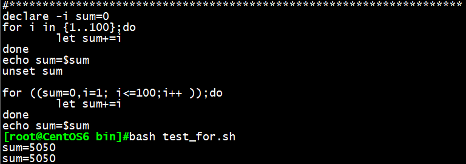
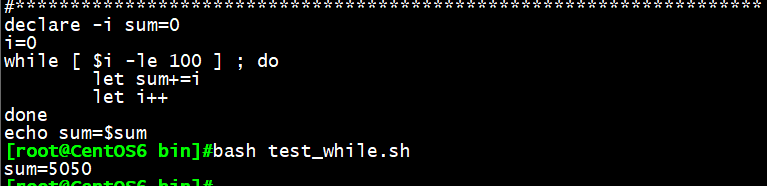
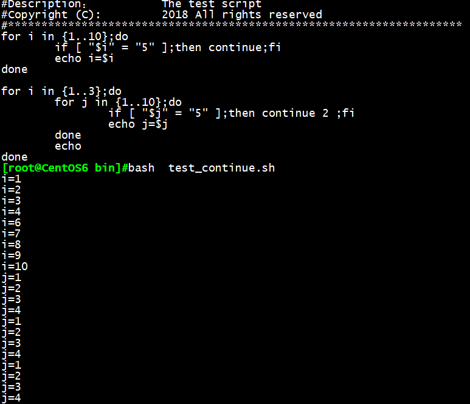
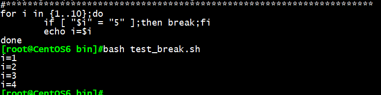
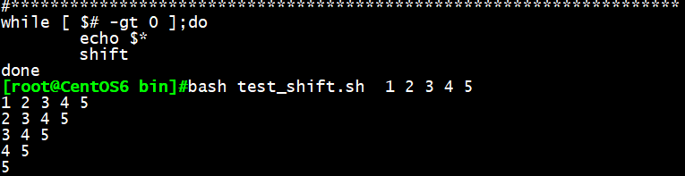
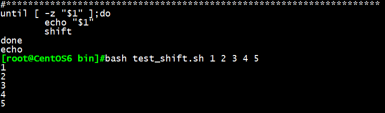
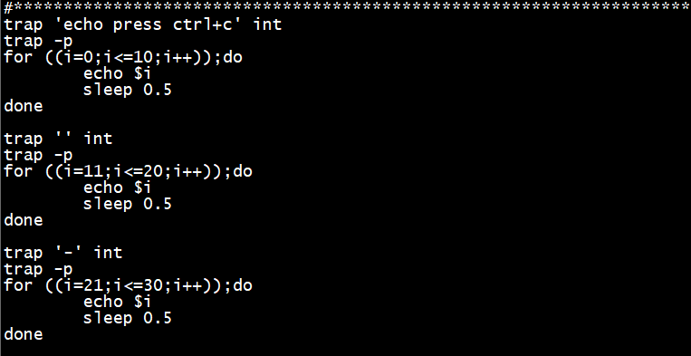
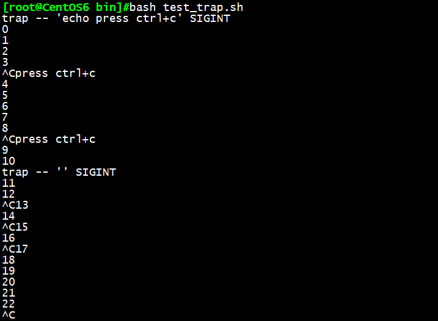

在前面的基础编程内容中，我们已经学习了shell脚本的顺序执行及选择执行，通过这两种方式，可
以帮我们解决一些简单需求，但要想在更复杂的场景中使用的话，就需要掌握循环执行的方式了。
一、if、case条件判断
条件判断if语句：
if语句 是指编程语言中用来判定所给定的条件是否满足，根据判定的结果（真或假）决定执行给出的两种操作之一。
格式：
1 | if 判断条件1；then # 条件1为真的分支代码 |
if语句会逐条件的进行判断，当第一次遇到为”真”的条件时，就会执行其分支代码，而后结束整个if语句。
条件判断case语句：
case语句是实现选择结构程序设计的一种语句，比较适合处理离散型变量。
格式：
1 | case 变量引用 in |
注意：case支持glob风格的通配符：
如：* 表示任意长度任意字符
？ 表示任意单个字符
[] 指定范围内的任意单个字符
a|b a或者b
二、for、while及until循环
循环执行
将某代码段重复运行多次
重复运行多少次
次数已知
次数未知
有进入条件和退出条件
循环主要语句有：for、whlie、until
for循环
for语句将循环一个列表中的每一个元素执行一次循环体代码，直到列表中元素全部执行过一次。
一般用于次数预先知道的循环。
格式1：
1 | for 变量名 in 列表；do |
其中列表的生成方式有多种：
直接给出列表
整数列表：
（a）{start..end[..step]}
（b）$（seq[start[step]end]）
返回列表的命令：
$（COMMAND）
使用glob，如：*.sh
变量引用：
$@,$*等
执行机制：
依次将列表中的元素赋值给”变量名”，每次赋值后即执行一次循环体；直到列表中的元素全部被执行，循环结束
格式2：C语言风格
1 | for ((: for (( exp1; exp2; exp3 )); do COMMANDS; done |
例：利用for循环依次读取列表{1..100}中的内容，并相加，得出1到100的数字之和

while循环
while结构循环为当型循环(when type loop)，一般用于不知道循环次数的情况。维持循环的是一个条件表达式，条件成立执行循环体，条件不成立退出循环。
格式：
1 | while 循环控制条件；do |
循环控制条件：进入循环之前，先做一次判断；每次循环之后会再次做判断；当条件为True时，则继续执行循环；直到条件测试状态为false时终止循环。
例：利用while循环，定义变量i=0，当i小于100时，执行循环，并让变量i每执行一次循环加1，直到i=100时停止循环，得出数字1到100之和

while循环的特殊用法（遍历文件的每一行）：
while read line； do
循环体
done < /PATH/FROM/SOMEFILE
依次读取/PATH/FROM/SOMEFILE文件中的每一行，且将行赋值给变量line
for循环与while循环的区别：
for循环与while循环是可以相互替代的；比如：
1 | for i in {1..10}；do |
用while语句来写的话：
1 | i=1 |
两者意思都是打印10次”OK”，那什么时候用for循环，什么时候又用while循环呢？
for循环用于针对集合中的每个元素的一个代码块，而while循环不断的运行，直到指定的条件不满足为止。
一般来说：
for循环比较适合循环次数确定的情况
while循环适合循环次数不确定的情况
until循环
维持循环的也是一个条件表达式，但与while用法正好相反，条件不成立时执行循环体，条件成立时退出循环。
1 | until 循环控制条件；do |
until语句和while语句可相互转化：
如：until [ test ]；do 等价于 while [ ! test ]；do
三、循环控制语句continue、break、shift
continue语句
用于循环体中
continue[N]：提前结束第N层的本轮循环，而直接进入下一轮判断；最内层为第1层
格式：
1 | while 循环控制条件；do |
例：依次打印数字1至10，当continue出现在5循环中时，直接跳过，继续执行6循环；
当continue出现在嵌套循环中时，continue 2，提前结束第二次本轮循环，并打印3次

break语句
用于循环体中
break[N]：提前结束第N层循环，最内层为第一层
1 | while 循环控制条件；do |
例：break语句将直接结束本轮循环

shift命令
shift[n]：将参量列表list左移指定次数，缺省为左移一次，适合用于处理位置参数
参量列表list一旦被移动，最左端的那个参数就从列表中删除。while循环遍历位置参量列表时，
常用到shift
例1：利用shifit，每次位置变量向左移动1位，并打印本次全部位置变量，直到位置变量为0个

例2：利用shifit，每次变量向左移动一位，并打印本次第一个位置变量，直到位置变量小于1时停止执行

避免出现无限循环：
1 | while true；do |
每个程序员都会偶尔不小心而编写出无限循环，在循环退出条件比较微妙时尤其如此，如果程序陷入无限循环，可按ctrl+c退出
要避免编写无限循环，务必对每个while、until循环进行测试，确保它按预期那样结束。
select循环与菜单
1 | select 变量 in list；do |
select循环主要用于创建菜单，常与case语句搭配使用，用户输入菜单列表中的某个数字，执行相应的命令
select是个无限循环，因此要记住用break命令退出循环，或用户exit命令终止脚本。可按ctrl+c退出循环
与for循环类似，可以省略in list，此时使用位置变量。
相关变量：
$PS3 menu菜单提示符
$REPLY 保存用户的输入信息
四、信号捕捉trap
trap ‘触发指令’信号
自定义进程收到系统发出的指定信号好，将执行触发指令，而不会执行原操作
trap “ 信号
忽略信号的操作
trap ‘-‘ 信号
恢复原信号的操作
trap -p
列出自定义信号操作
例：打印数字1到10的过程中，trap -p显示自定义信号操作，由于trap “int捕获了int信号，ctrl+c无法中断显示，且显示自定义输入：press ctrl+c；
打印数字11到20的过程中，由于trap “int捕获了int信号，ctrl+c无法中断显示
打印数字21到30的过程中，trap ‘-‘恢复了原信号操作，顾ctrl+c又可中断显示

